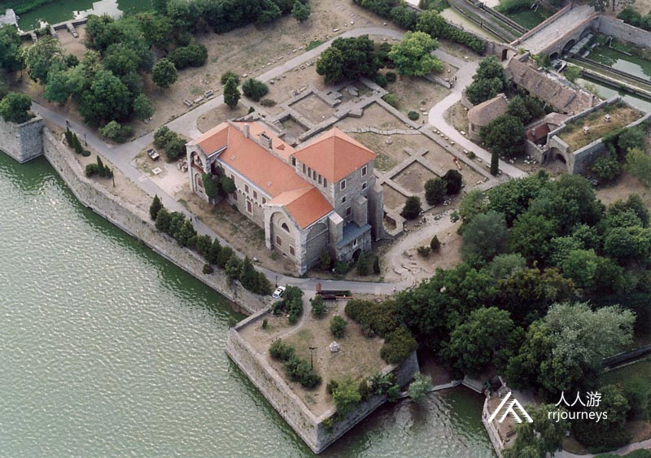
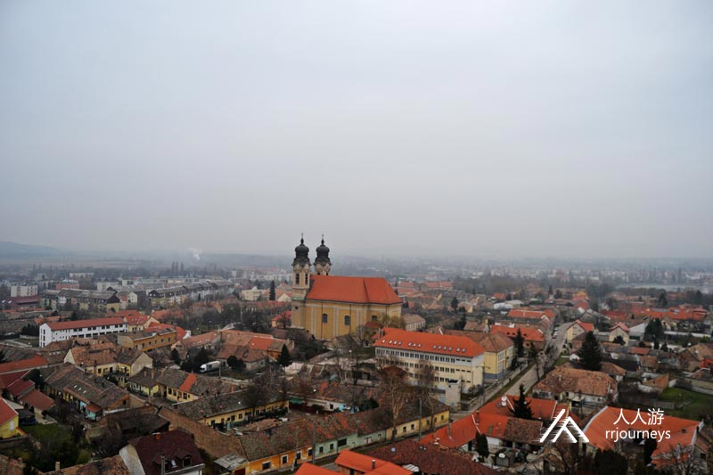
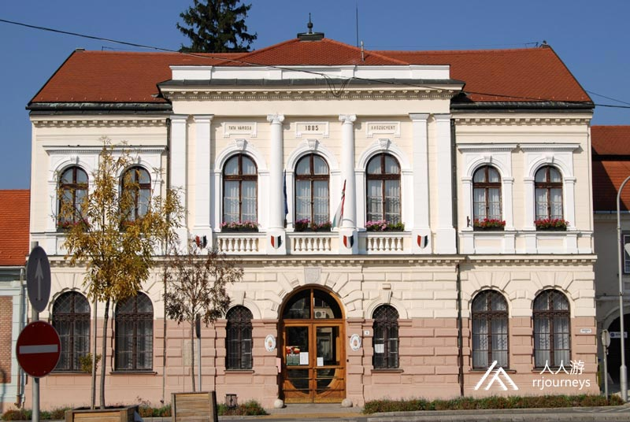
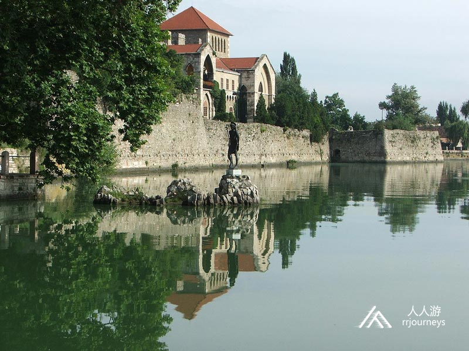
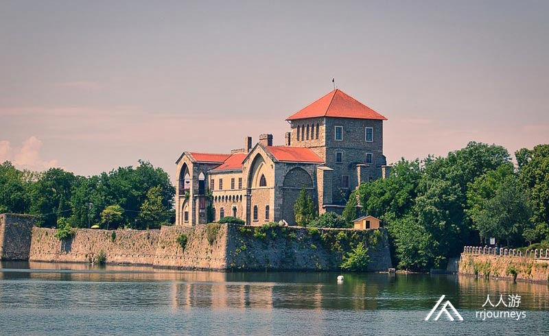
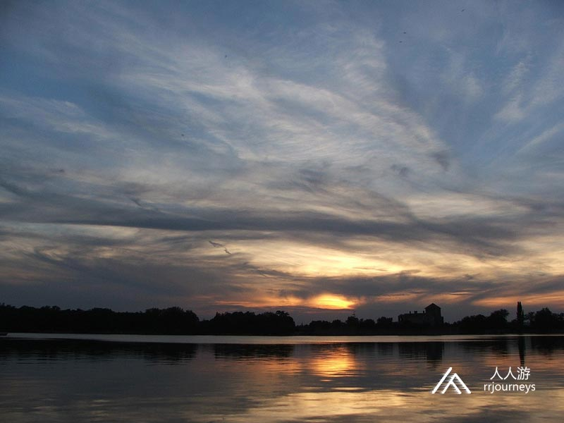
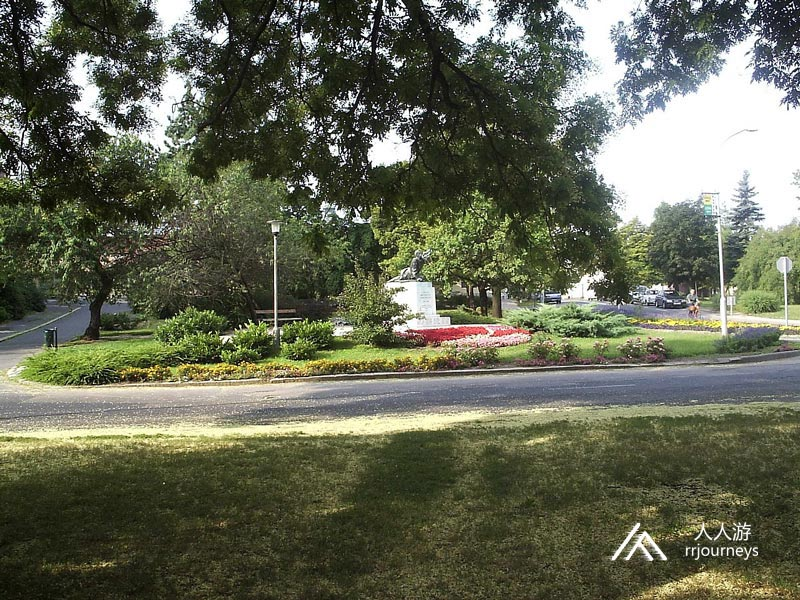
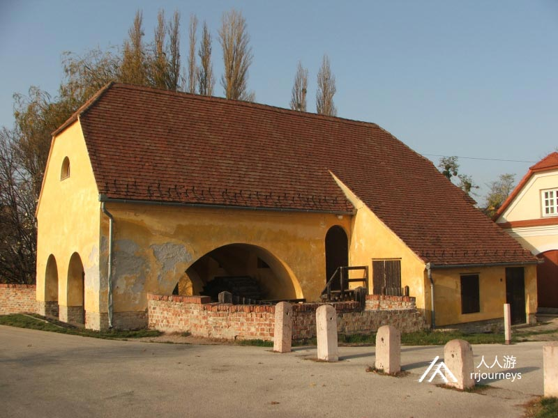
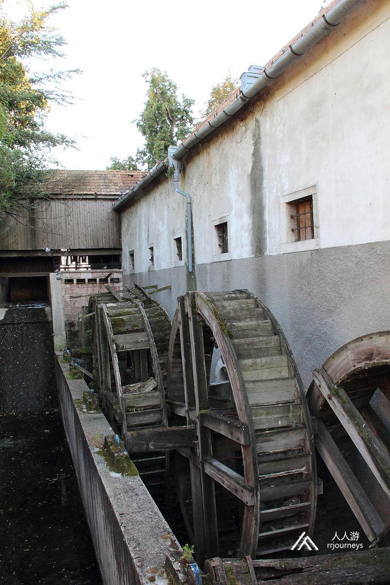
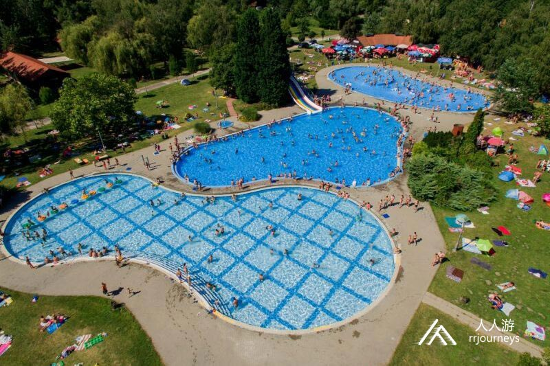

【美景】
陶陶是一个军事城市，它是匈牙利武装部队的两个射击旅之一。第一个军区司令部现作为和平部队。 陶陶老湖是匈牙利最古老的鱼塘。 陶陶的“士兵之春”是当地最著名的明亮温泉浴场。
Goulash牛肉炖汤
Libamáj 鹅肝
Lángos特色油饼
Toltott Kaposzta 圆白菜肉丸
Halászlé 鱼汤
Ujhazi Tyukhuslevesi 家常老鸡汤
Kurtoskalacs 烟囱卷面包
Egri Bikavér埃格尔公牛血葡萄酒
陶陶 陶陶位于匈牙利西北部，在科马罗姆-埃斯泰尔戈姆州的管辖，面积78.17平方公里，海拔高度140米，人口23,377，其中约一半居民信奉天主教。 该住区最有可能来自米什科尔茨氏族成员陶陶的名字，他死后没有继承人。据说陶陶也可能来自圣史蒂芬寄养牧师陶陶的本笃会成员。 考古发现陶陶自古以来就已有人居住。陶陶粉矿挖掘的伍尔姆冰川是约十万年前的遗址。在史前人类定居在干涸的石灰石凝灰岩池也在这里。几千年来，有利的生活条件和热源一直吸引着人们到该地区。
 1927年新的市政厅镇落成，先后有了博物馆、医疗保健院、疗养院等，并于1938年6月1日实现了陶陶和托瓦罗斯的行的政合并，改名为陶陶。1945年后陶陶的开发和建设才开始。这个城市是一个军事城市，它是匈牙利武装部队的两个射击旅之一。第一个军区司令部现作为和平部队。  景点：中心广场及市政厅 中心广场及市政厅在科苏特广场陶陶老城区的中心，该场地最初用于举行市场和集市。1895年它改名为科苏特广场。广场是1964年设计的景观形式，在正方形的中间，从三角形基座开始，有一个17米高的方尖碑雕像玛丽亚无玷圣母。2015年科索特广场以保存历史古迹的名义开发和翻新。 市政厅是栋单层的建筑，建于1885年，建筑物的正面刻有1885年的金色字母。  景点：陶陶城堡 陶陶城堡由卢森堡国王西吉斯蒙德在1397年至1409年间建造的，是拉克菲家族的前堡垒所在地，它由四个角楼和一个内部庭院组成，内部庭院方形布局，仅由东南翼楼组成。陶陶博物馆是1912年在贝拉•多尔奈 老师创立的第一家博物馆。城堡的挖掘于1965年。1974年，库尼•多莫科斯博物馆在城堡的十个大厅中开设了永久性和临时性展览。在底楼的城堡展览厅中，创建了罗马和中世纪石材档案馆，以展示考古纪念碑的历史。
 2017年该城堡进行了翻新。  景点：老湖 老湖位于陶陶，它是人工造的，是该国最古老的鱼塘，总面积为269公顷。沿海步行道的周长为7.28 公里，取而代之的是已经是更新的沼泽地，那里充满了泉水。湖泊的形成与地形条件有关，大量的泉水在湖泊的河床汇聚，成为一个湖泊，开阔的水面，芦苇和沼泽交织在一起。山谷大坝的建立是在罗马时代。1740年代，通过排干沼泽来实现了现在的样子。1977年被宣布为县重要自然保护区。1993年颁部法令禁止在湖上钓鱼。 2006年，陶陶与荷兰民间环境协会达成协议，清理湖泊及其周围环境。2005年，该湖的部分资源得到了恢复，水位也上升了15％。 该湖正在进行工业化养鱼。夏季，这里有游轮，皮划艇和划船俱乐部。该湖还是冲浪者和帆船的热门之地，也是受欢迎的沐浴场所。在冬季，面向城市的边缘用于滑冰。  景点：英雄广场 英雄广场在陶陶的艾什泰哈齐宫和科苏特广场之间。随着时间的流逝，该广场的名称已更改了数次。它曾被称为公墓广场、伊丽莎白广场、斯大林广场，英雄广场的名字是从1991年11月7日开始使用的。  景点：陶陶水车 陶陶水车历史悠久，是为碾磨谷物和皮革行业提供动力的。水车建于13和14世纪。1268年玛丽皇后将陶陶磨坊卖给了“沃尔特来吧”。修道院有六座磨房。

面粉厂有勃艮第、波美斯特、奇夫拉、亨茨、扬科、内波木森、老贝克和苏杰吉工厂。 陶陶的15个水车建于20世纪30年代，当时只有四个水车运行。1949年，陶陶巴尼亚不断增长的煤矿开采和随之而来的岩溶水开采，引起了地狱之泉的沉陷，但这并未危及水车的存在。1950年农业的转变和随之而来的国有化，导致越来越多的水厂关闭。  景点：明亮温泉浴场 明亮温泉浴场是一个海滩和露营的场所，离陶陶1.5公里，使用天然泉水，是重要的自然保护区，明亮泉的轻度碳酸水在21-22°C时破裂留到地表。 陶陶尔族为其中的温泉源指定了独特的名称：“士兵之春”，它的名字源于被赶出军营的士兵只能在春天沐浴的事实。被命名为明亮温泉，是因为温泉从三米深的火山口喷出，一层白色的石英砂在透明的水中鼓泡，肉眼可以看见，数千个气泡上升到的温泉表面。 陶陶利用泉水和径流水于1913年为公众建立了浴场，并在岸上建造了公共更衣室。由于简陋的环境并没有吸引到太多的客人。1927年夏天陶陶在温泉区修建了道路，并在长廊上放了长椅。 2001年，水源缓慢恢复运行，暂时排出少量水。如今芬尼斯巴斯拥有2000平方米的浅水，有所谓的“无定形”泳池和50米长的运动泳池和滑水道。 